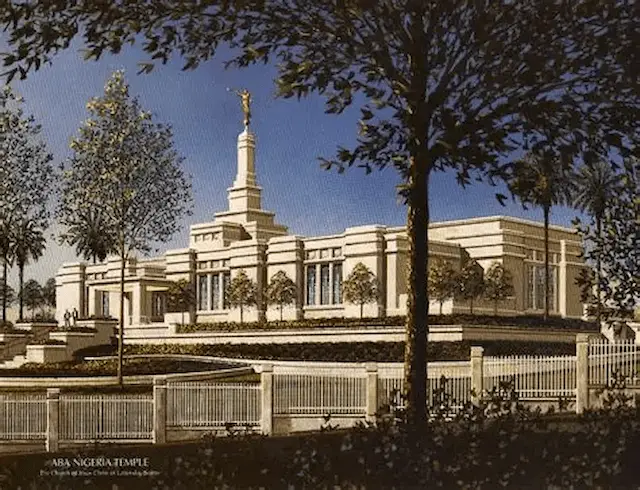
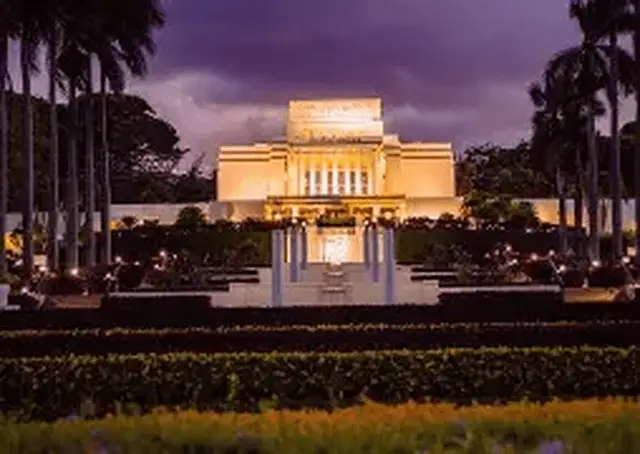

Temple Album
☰
Home
Old
New
Large
Small
Temple Album
Featured Temples
Accra Ghana Temple
Salt Lake Temple
Rome Italy Temple
Provo City Center Temple
Paris France Temple
São Paulo Brazil Temple

Aba Nigeria Temple

Laie Hawaii Temple
Kinshasa DR Congo Temple